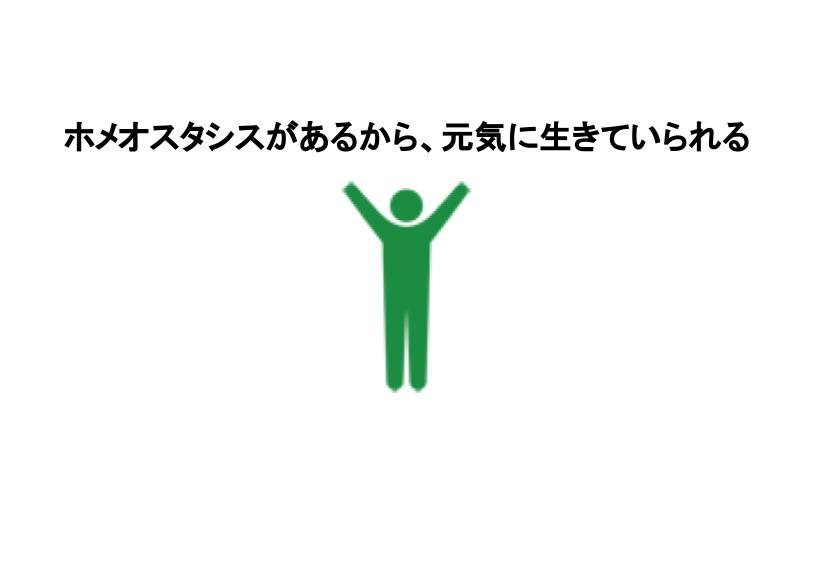
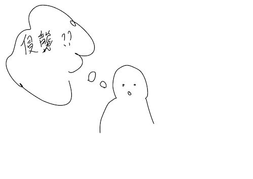

この章では、侵襲の学習に入る前に、「ホメオスタシス」という概念を学んでいきましょう。
ホメオスタシスは侵襲を理解する上で、絶対に不可欠なものです。
しっかり学習していきましょう。
ホメオスタシスとは何かというと、人間の外部・あるいは内部の環境が変化しても、人間の体内の環境は一定に保とうとするはたらきのことを指します。
例えば外の環境が寒くなったからといって、私たちの体温が35℃を下回ることはないですよね？
食事をしたあとは血糖が上がりますが、また少し経つと下がってきますよね。
このように、人間はホメオスタシスにより、体内の環境を一定に保とうとする機能がはたらいていることがわかります。


では「侵襲」とはなんでしょう？
体内のホメオスタシスを破綻させる危険のある刺激、すべてを「侵襲」といいます。
侵襲は何も「手術」や「感染」だけでないんですね。皆さんも極度にストレスを抱えると体調を崩しますよね。ホメオスタシスを破綻させてしまう刺激を全て「侵襲」として扱うということを覚えておいてください。
ではここまで学んだことが理解できているかどうか、テストしてみましょう。
テストはどうでしたか？
人間の身体はホメオスタシスという機能が備わっているので、侵襲を受けてもなんとか立て直そうとします。
そのため、傷を負ったり（例えば手術など）、感染したり（風邪をひくなど）すると、ホメオスタシスを保とうと「炎症反応」が起こります。
次の章からはこの炎症反応について学んでいきましょう！